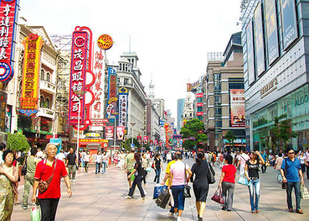
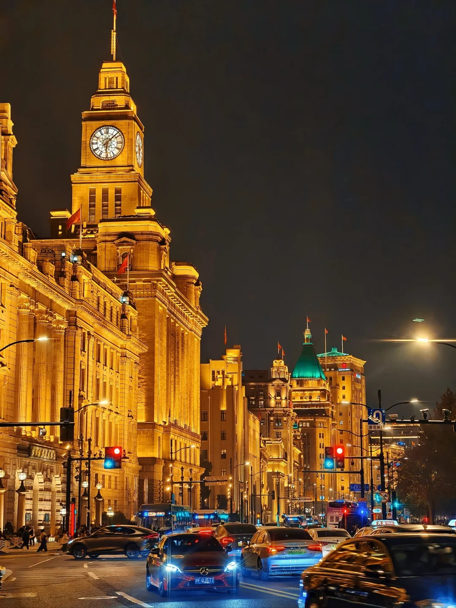
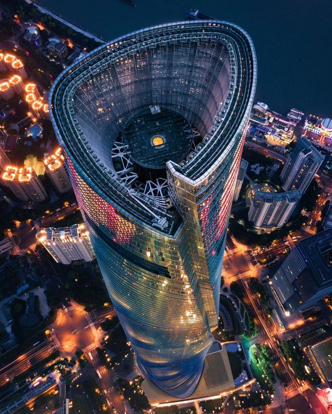
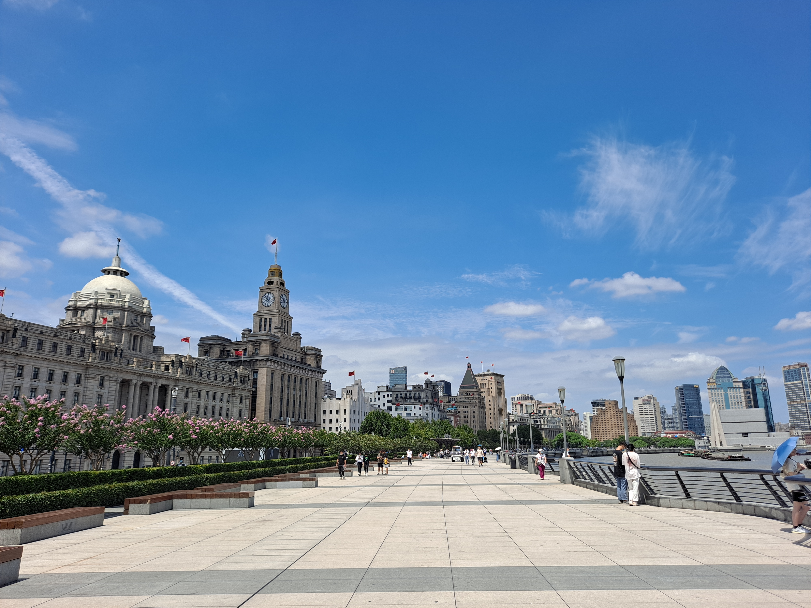
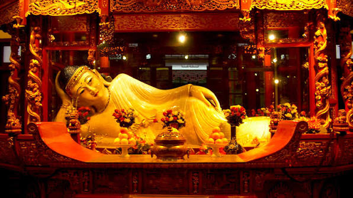
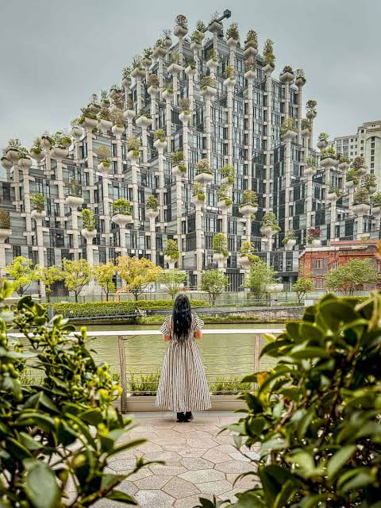
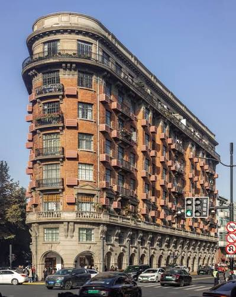
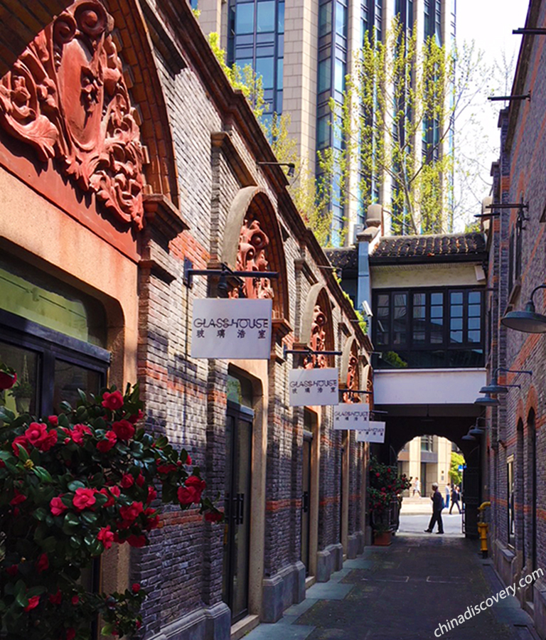
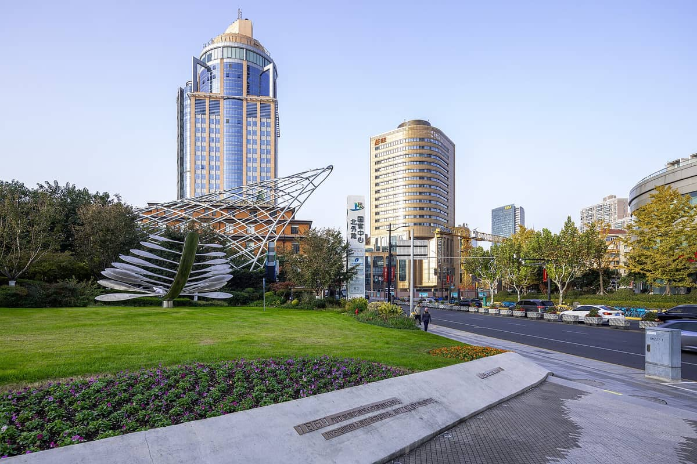
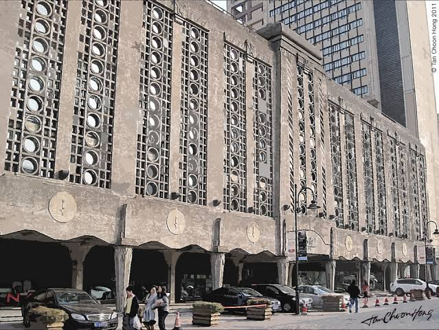

➕ Add Custom Stop
Day 1 (Nov 2) — Historic Core, Pudong Skyline & The Bund
Focus: Old City, Bund waterfront, 30-cent public ferry crossing, Lujiazui skyscrapers. Starts 12:00 PM.
12:00 PM
Yu Garden & Yuyuan Old Street (豫园) 🖼️
Alt: Fuyou Market / Old City Lanes (城隍庙 / 福佑路)
1:45 PM
Lunch 🍱
3:15 PM

East Nanjing Road Pedestrian Street (南京东路) 🖼️
Alt: Stroll through quiet parallel heritage streets (Jiujiang Rd)
4:00 PM

The Bund (Daytime Waterfront) & Public Ferry 🖼️
Alt: Skip ferry, take Metro Line 2 direct to Pudong if tight on time
5:30 PM

Shanghai Tower & Pudong Skyline (上海中心大厦) 🖼️
Alt: Shanghai Ocean Aquarium (上海海洋水族馆) nearby
8:00 PM

The Bund at Night (外滩夜景) 🖼️
Alt: Return straight to hotel via Wusong Road bridge walk
🍽️ Day 1 Food Suggestions (Nov 2)
- Yuyuan Bazaar (1:45 PM): Nanxiang Steamed Bun Restaurant (南翔馒头店) for authentic local Xiaolongbao (soup dumplings).
- East Nanjing Rd / Bund (4:00 PM): Local snack outlets like Shen Da Cheng (沈大成) for traditional sticky rice pastries.
Day 2 (Nov 3) — Temples, 1000 Trees, Wukang & Xintiandi
Focus: Unhurried West-to-South arc covering Putuo, Jing'an, French Concession, and Xintiandi.
9:00 AM

Jade Buddha Temple (玉佛禅寺) 🖼️
Alt: Jing'an Temple (静安寺) if you prefer gold-tiered architecture
10:15 AM

Tian An 1,000 Trees (天安千树) 🖼️
Alt: Stroll along Suzhou Creek waterfront promenade / M50 Creative Park
11:30 AM
Lunch 🍱
1:15 PM

Wukang Mansion, Wukang Rd & Anfu Rd (武康大楼 / 安福路) 🖼️
Alt: Zhangyuan & West Nanjing Rd (张园) / Shanghai Museum (上海博物馆)
3:30 PM

Evening Hub: Xintiandi OR Tianzifang (新天地 / 田子坊) 🖼️
Choice: Select Xintiandi for upscale dining or Tianzifang for craft alleys
🍽️ Day 2 Food Suggestions (Nov 3)
- 1000 Trees Area (11:30 AM): Trendy cafes or riverside bistros inside the complex facing Suzhou Creek.
- Xintiandi (6:30 PM): Din Tai Fung for soup dumplings, or international patio dining in restored stone courtyards.
Day 3 (Nov 4) — Hongkou Heritage & North Bund Promenade
Focus: Relaxed, stress-free neighborhood loop around your hotel. Zero long transfers before your final night.
9:30 AM

Shanghai Postal Museum (上海邮政博物馆) 🖼️
Alt: Zhapu Road Bridge photo spot right outside
10:45 AM

1933 Old Millfun (1933老场坊) 🖼️
Alt: Duolun Road Cultural Street / Lu Xun Park
12:30 PM
Lunch & Rest 🍱
5:00 PM
North Bund Promenade & Sunset (北外滩) 🖼️
Alt: Farewell dinner along North Bund Green Land
🍽️ Day 3 Food Suggestions (Nov 4)
- 1933 Millfun / Hongkou (12:30 PM): Relaxed coffee shops or local bistro inside 1933 Old Millfun.
- North Bund Green Land (6:00 PM): Manner Coffee or riverside restaurants facing the Pudong towers.
💰 Expense Tracker
Track daily spending in CNY (¥).
TOTAL: ¥0.00